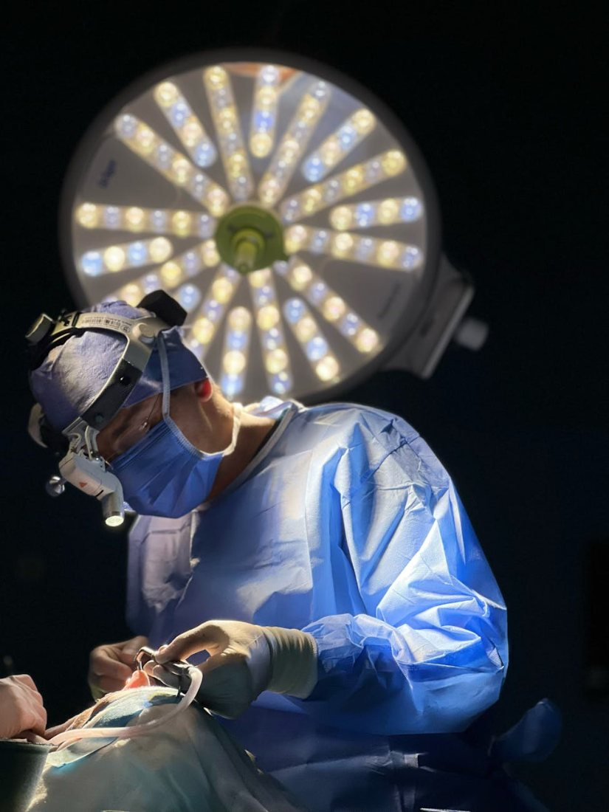
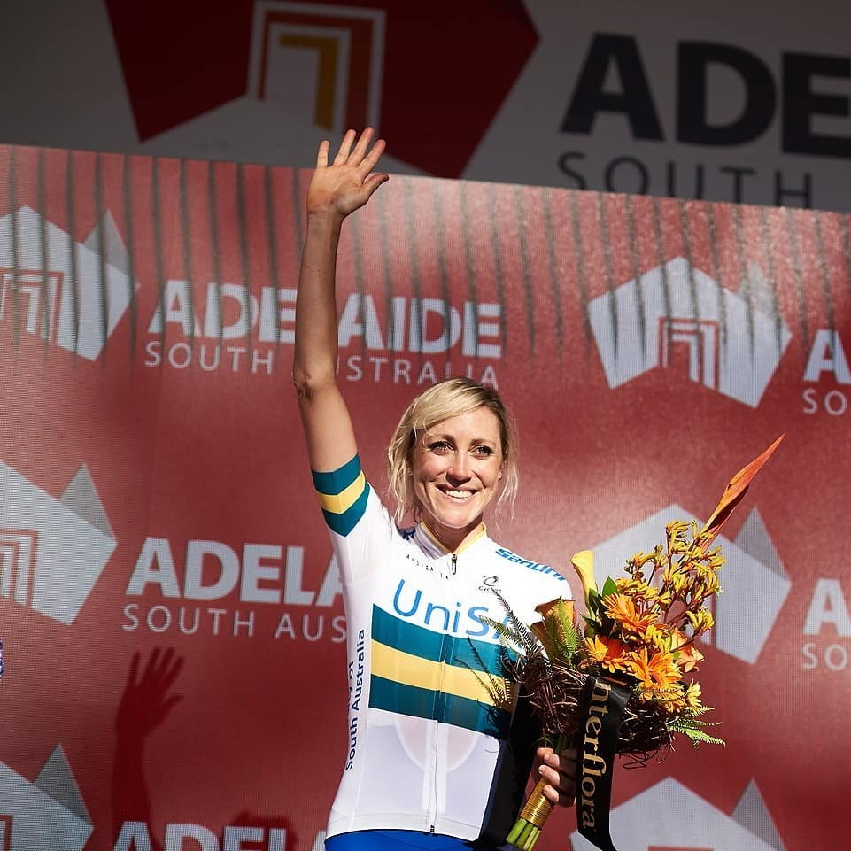
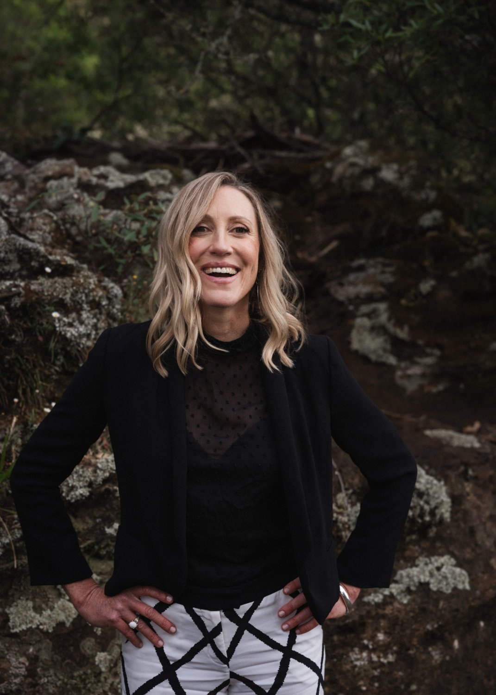

A performance protection and optimisation system, built specifically for surgeons.
Every other elite performance domain, professional sport, aviation, the military, invests deliberately in the science of human performance: physiological monitoring, recovery architecture, cognitive regulation, longevity protection.
Surgical careers are built and broken on the same variables. The systems that protect athletes have never reached the operating theatre. Surgeons are the most uncoached elite performers in the world.

Surgical excellence is a long-term performance system that demands deliberate investment across physiology, cognition and recovery. The evidence base is here, and it is growing.
Smarter devices, faster technology and stronger surgeons. Sustainable performance is the new gold standard.

Elite sport. Clinical science. Coaching psychology.
I spent 14 years as a professional cyclist, and know from experience that world-class performance is never an accident. It is built deliberately, through science, coaching, and systems that protect the human at the centre.
The app is the foundation. Workshops and keynotes are the augmentation. Together they reach every surgeon, every day, with deeper engagement layered in where it adds the most value.
A deployable performance app for every surgeon. Seventeen domains, accessible 24/7. No room bookings, no clinical-time displacement.
Targeted half-day or full-day sessions with specialty leads, training cohorts and leadership groups. The Performance Stack, applied.
Network events and division meetings that set cultural tone and signal strategic commitment to the surgeon as a human performer.
It pays for itself if it prevents a small number of cancelled lists, delays the loss of one senior surgeon, sustains marginal gains in case volume or quality, or reduces exposure to a patient safety event. Everything beyond that is upside.
Consistent surgeon capacity. Fewer late starts, overruns and cancelled lists.
Protecting musculoskeletal and cognitive capacity that determines career length.
De-identified, longitudinal visibility of capacity trends. Early warning before impact.
Sustained case volume, complexity and technical performance under load.
Stronger decision-making, technical consistency and team performance.
From a single keynote to a network-wide deployment. Each piece stands alone, and each one strengthens the others.
The Uncoached Athlete: the thesis and peer-reviewed evidence base behind the system.
The Surgeon Athlete: the talk that reframes performance and shifts the paradigm.
A 3-hour immersive workshop for 2 to 6 surgeons, built to drive tangible change.
Three tiers of personalised 1:1 coaching, from monthly to fully comprehensive.
A coaching and education app, ready for distribution and hospital licensing.
Redefining Human Performance in the OR
The written thesis and the rationale behind the system. A peer-evidenced case for treating the surgeon as the elite performer they already are. It draws on the science of stress regulation, HRV, sleep, recovery and deliberate practice, and maps it directly onto the operating theatre.
Read the positioning paper→A keynote that reframes how surgeons, hospitals and colleges think about human performance. I take the audience from the start line of an Olympic Games to the start of a full surgical list, and show why world-class performance is never an accident.
You all know the what. What I give you is the why and the how. And I promise: no burpees.
A hands-on workshop building personal performance strategy. Aggregate gains, stack to compound capacity.
Putting back what the OR extracts.
Toggling between go and flow under load.
The substrate for sustained focus.
Strength and VO₂ for resilience and longevity.
A highly personalised framework designed to support sustainable high performance while protecting long-term health and career longevity.
A performance coaching app with three functions — education, tracking, and coaching. It treats the surgeon as the elite performer they are. Two daily scores turn wearable data and surgical case load into guidance on recovery and performance optimisation.
How ready you are to operate. Built each morning from sleep, HRV, resting heart rate and recent case load.
How efficiently your body handled the OR. Cardiac performance and recovery during cases, tracked against your baseline over time.

Speaking · Workshops · Coaching · SurgeON Track™.